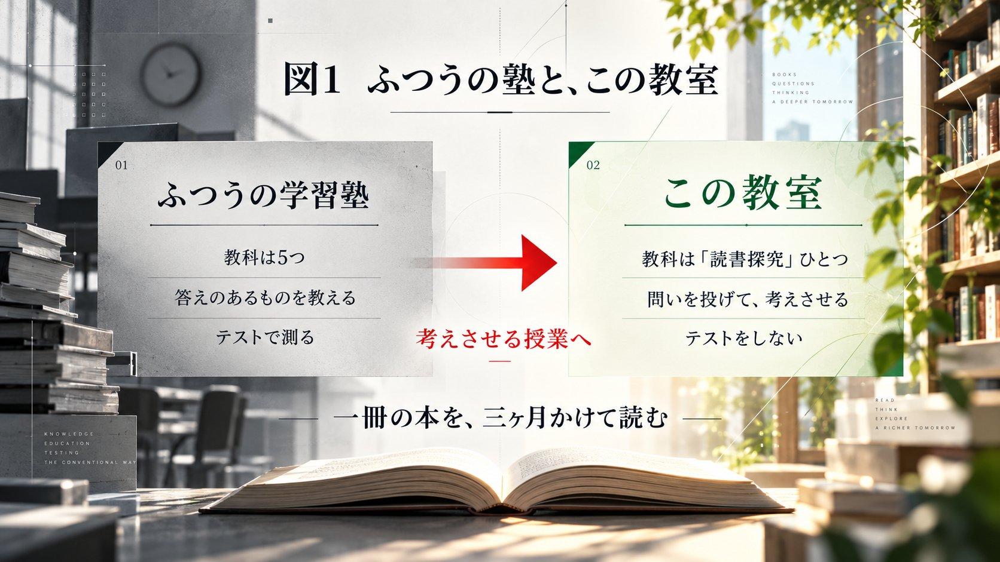
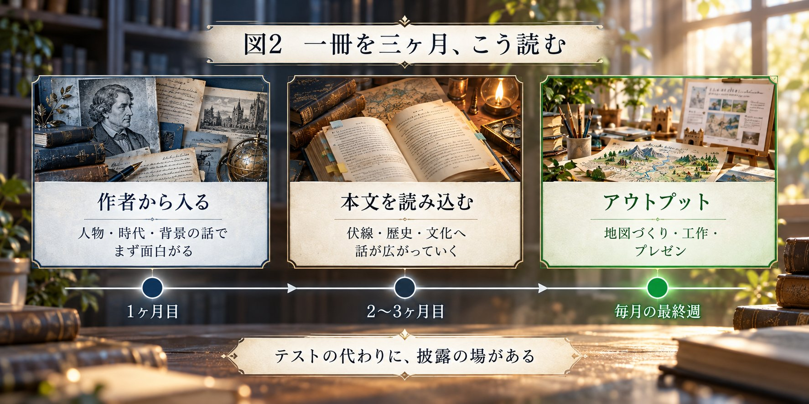
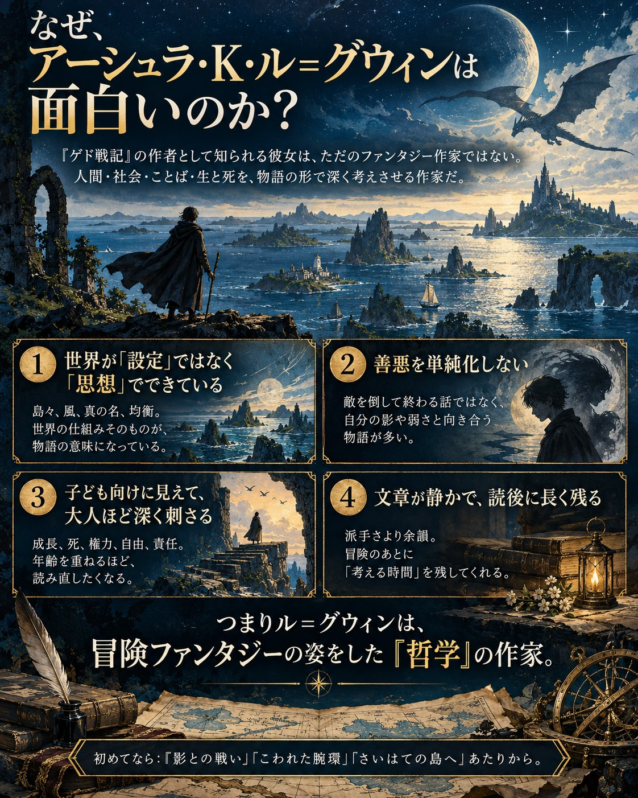

今回話していること
- 教科は「読書探究」ひとつ。一冊を三ヶ月かけて読む
- 最初の授業は、本ではなく「作者」から入る
- 本当の名前を知られると支配される──『ゲド戦記』と江戸時代の諱
- 作者も本名ではなかった──デフォーという名前の話
- 速読でも、設問に答える力でもない読書教室
- 十代の6割以上は、月に一冊も本を読まない
- テストを全部やめた。では、何で評価するのか
- 読んだ情報だけで、作品の地図を描く
- 評価しないからこそ、子どもは発言する
- 音読を、演じる。わざと間違える先生
- 本が嫌いな子の入り口になる、野外イベント
図解



チャプター（目安）
- 0:00オープニング／出演者紹介
- 0:57教科は「読書探究」ひとつだけ
- 2:03まず、作者が面白い──ル=グウィンの話
- 4:08本当の名前を知ると、相手を支配できる
- 5:28『ロビンソン・クルーソー』と、作者デフォーの人生
- 7:44算数はどうするんですか、と聞かれないのか
- 8:46速読でも、設問に答える力でもない
- 10:56テストは、全部やめた
- 11:37読んだ情報だけで、作品の地図を描く
- 13:54評価軸がないから、初めて人前で話せた
- 15:40教室の風景──本棚と、パズルと、魔法の杖
- 18:23本が嫌いな子の入り口「ブッククエスト」
- 20:05音読を演じる。わざと間違える先生
出演
管野 淳一（教育者／教育研究所ARCS 代表理事）
鈴木 健太（読書探究の教室 主宰／塾講師）
濱中 志門（読書探究の教室 主宰／塾講師）